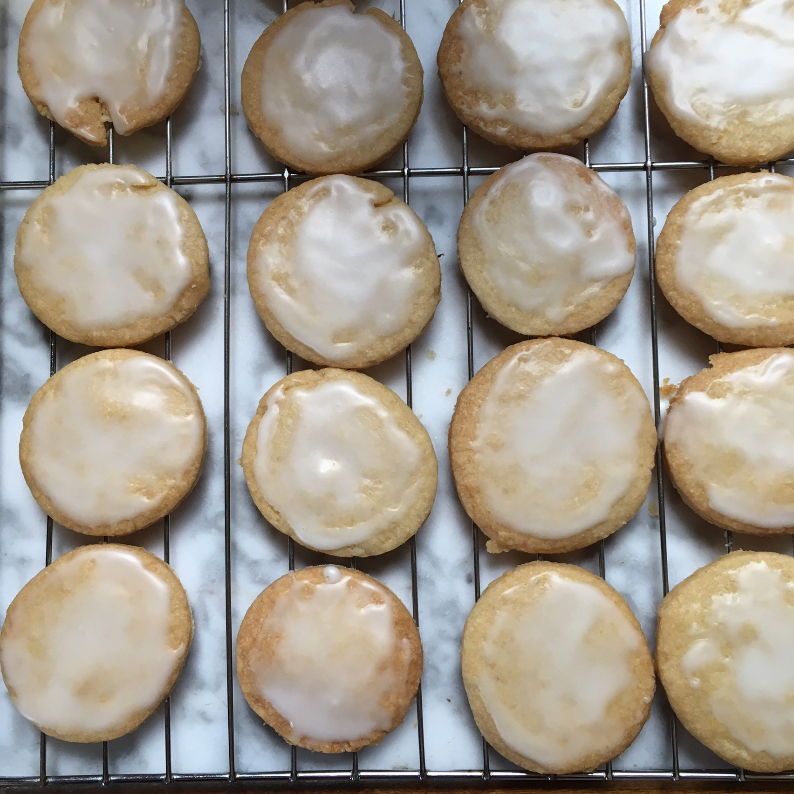

Lemon Shortbread Cookies

Ingredients
- ¼ cup packed brown sugar
- 2 teaspoons finely grated lemon zest
- ½ teaspoon lemon extract
- ¼ teaspoon vanilla extract
- 1 cup all-purpose flour
- ¼ teaspoon salt
- ½ cup butter, room temperature
- In a medium bowl, mix butter and brown sugar with an electric mixer until combined. Blend in lemon zest, lemon extract, and vanilla.
- Stir flour and salt into butter mixture. Transfer mixture to waxed paper or plastic wrap. Roll into a log (for slicing cookies) or shape into a disk (for using cutters); wrap dough and refrigerate for 30 minutes.
- Preheat oven to 325 degrees F (170 degrees C).
- Roll dough out on a lightly floured surface until 1/4 inch thick. Cut out cookies using a 2-inch round cutter and place 2 inches apart on ungreased baking sheets. (Or slice cookies and arrange on baking sheets). Gather and reroll dough scraps.
- Bake in preheated oven until edges are pale golden, but not browned, about 20 to 25 minutes. Let stand on baking sheet 2 minutes. Remove to a rack and let cool completely.